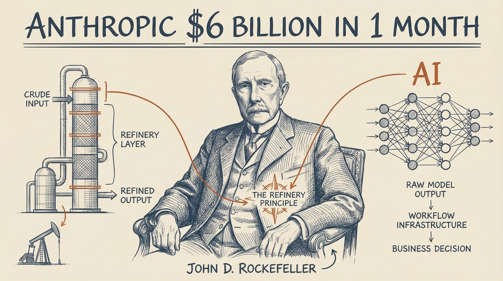
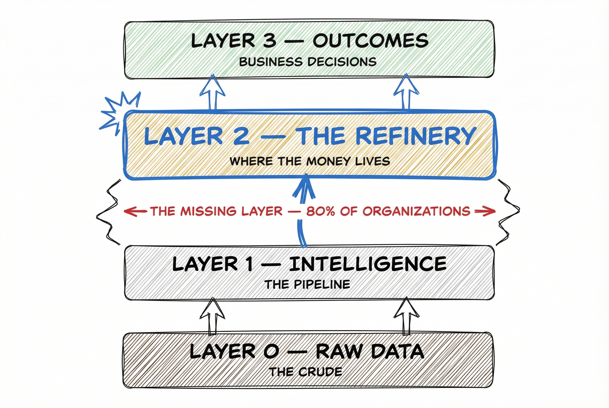

The AI race is not about who has the best model
Rockefeller Never Drilled a Single Well. He Built the Refinery. That Is Exactly What Is Happening in AI Right Now.
Standard Oil controlled 90% of US oil refining by 1879 without ever competing for crude. Today, the same consolidation pattern is playing out in AI. The organizations building workflow infrastructure — the refinery layer — are locking in structural advantage while everyone else fights over which model to use.

This is for the leader who has deployed AI tools and is staring at flat numbers. You have the crude. The intelligence is flowing. Nothing is being refined.
If that describes you, you are likely dealing with:
- AI pilots that produced demos, not decisions
- Board or C-suite pressure to show P&L impact from tools already purchased
- A team using AI individually, with no consistent output flowing into operations
What becomes possible when you name this correctly:
- → Stop fighting the model war and start building the refinery
- → Stop launching pilots and start designing conversion infrastructure
- → Stop measuring AI deployment and start measuring your organizational crack spread
The problem is not your model. It is not your data. It is not your team.
The refinery is missing.
The Crack Spread
Anthropic added $6 billion in annualized revenue in a single month. February 2026. One month. More than Snowflake or Databricks earn in a full year.
This is not about Anthropic.
This is about what that number proves. AI intelligence — the model itself — has crossed from emerging technology to commoditizing infrastructure. Anthropic has grown over 10x annually for three consecutive years. The gap between Claude, GPT-4o, Gemini, and DeepSeek is narrowing. The intelligence layer is a utility now.
And yet.
Same models. Same data access. Same technology generation. Opposite results.
In the oil industry, there is a term for this: the crack spread. It is the difference between the price of crude oil and the value of the refined products that come out of the refinery.
The organizational crack spread is the gap between raw AI output and a refined business decision. Two companies subscribe to the same AI platform. One routes the output through designed workflows, governance protocols, and decision processes. The output becomes a business decision that generates revenue. The other gets a chatbot response that sits in a browser tab.
Same crude. Different refinery. Different margin.
The Three Ways Organizations Sit on Crude
Here is where most organizations are right now.
The pilot that never lands. MIT's NANDA report reviewed over 300 AI initiatives and found that 95% never deliver P&L impact. The models work. The organizational absorption of those models does not. You have AI pilots. You do not have AI infrastructure.
The productivity paradox returns. A February 2026 NBER study of nearly 6,000 executives across four countries found that 89% of managers saw no change in productivity despite AI adoption rising from 61% to 71% of firms. Economists are calling this a return of the Solow Paradox — you can see the AI age everywhere but in the productivity statistics. The same thing happened with electricity. The same thing happened with computing. The bottleneck was never the technology.
What becomes possible when you name this correctly:
You stop fighting the model war and start building the refinery. You stop launching pilots and start designing conversion infrastructure. You stop measuring AI deployment and start measuring your organizational crack spread. You shift from “AI tools” to “AI infrastructure” — and that vocabulary shift signals the strategy shift that changes everything downstream.
How Rockefeller Built the Chokepoint
Studying how organizations respond to technological disruption, one pattern keeps surfacing. History already named it — in 1872, in Cleveland, Ohio.
January 1872. The American oil industry is in chaos. Crude prices have collapsed. Producers in the Pennsylvania oil fields are going bankrupt. Everyone with capital is racing to drill more wells, convinced that the answer is more crude, cheaper crude, faster crude.
One man in Cleveland sees the problem differently.
John D. Rockefeller is not an oil driller. He is a refiner. And he has noticed something that the drillers have not: crude oil is worthless until it is refined. The drilling rig is not the bottleneck. The refinery is. The entire value of the oil industry flows through a single chokepoint — the conversion of crude into kerosene, lubricants, and other usable products. Whoever controls that chokepoint controls the industry.
Rockefeller does not invest in more wells. He does not compete for drilling rights. He does the opposite.
In the first three months of 1872, Rockefeller bought out, shut down, or bankrupted 22 of his 26 Cleveland competitors. Ninety days. Twenty-two acquisitions. He negotiated railroad shipping rates 40–50% below what smaller refiners could access, making his cost structure unbeatable. He would present competitors with his cost data, then offer a generous buyout. They could accept or be crushed. Most accepted.
By 1879, Standard Oil refined over 90% of all oil in the United States. Rockefeller never drilled a single well to do it.
The crude producers — the ones who had the best drilling technology, the richest deposits, the most active wells — watched their market power evaporate. They had raw material. They had no path to market value. Rockefeller’s refinery efficiency drove kerosene prices from 26 cents to 8 cents per gallon. He delivered cheaper energy to millions of American households while destroying competitors at both ends of the value chain.
The lesson is not about monopoly tactics. It is about where value concentrates.
Rockefeller understood that horizontal integration at the conversion layer — the refinery — beats vertical integration at the production layer every time. Let the drillers fight over who can pump more crude. The refinery is where the money lives.
That pattern is repeating right now. The AI model providers are the crude producers. They are racing to pump more intelligence — faster, cheaper, smarter. The organizations that build the refinery layer — the workflow infrastructure that converts AI output into business decisions — will control the chokepoint. And whoever controls the chokepoint controls everything downstream.
The 4-Layer Refinery Model
Here is the framework. Four layers. The diagnostic is simple: find where the conversion chain breaks.
LAYER 3: OUTCOMES — Business results, decisions, revenue
^ processed by
LAYER 2: REFINERY — Workflows, governance, decision routing
^ processed by
LAYER 1: INTELLIGENCE — AI models (Anthropic, OpenAI, etc.)
^ fed by
LAYER 0: RAW DATA — Internal data, market signals, ops data
Most organizations invest heavily in Layer 0 and Layer 1. They collect data. They buy AI tools. Then they wonder why nothing changes. The answer is structural: Layer 2 — the refinery — is missing or improvised. And Layer 2 is where all the value concentrates.

Layer 0 — Raw Data (The Crude)
This is what you are pumping out of the ground. Customer records. Transaction histories. Market signals. Operational data. Sensor feeds. Communication logs.
Most organizations have more crude than they know what to do with. Data is not the bottleneck. A common objection is “our data isn’t ready” — 68% of enterprises cite data quality as a top-three AI blocker. But MIT NANDA’s research shows that the organizations succeeding with AI start with workflow design and use data that is “good enough,” improving quality iteratively. The data readiness excuse is the driller’s version of waiting for a richer well. The refinery does not need perfect crude. It needs a functioning conversion process.
Diagnostic question: How much data does your organization collect that never reaches a business decision?
Layer 1 — Intelligence (The Pipeline)
The AI models. Claude. GPT-4o. Gemini. Copilot. The vertical AI tools embedded in your industry software. This is where everyone is fighting.
But the pipeline only moves crude. It does not refine it.
Anthropic’s revenue trajectory — $1 billion in 2024, $9 billion by end of 2025, $19 billion run rate by March 2026 — proves the pipeline is commoditizing. Foundation model API spending hit $12.5 billion across the industry in 2025. Enterprise AI infrastructure spending jumped to $18 billion. The models are getting better and cheaper simultaneously. Access to intelligence is table stakes.
Fighting over which AI model to use is fighting over drilling rights. The refineries that survive market shifts are the ones that can process multiple inputs — crude, bio-based, synthetic — without being locked to a single source. Your AI workflow infrastructure needs to be model-agnostic for the same reason. When the next model arrives, your refinery keeps running.
Diagnostic question: If you switched AI providers tomorrow, how much of your operational infrastructure would break?
Layer 2 — The Refinery (Where the Money Lives)
This is where the crack spread is determined.
Layer 2 is the workflows, governance structures, decision routing protocols, and human escalation processes that convert raw AI output into business decisions. It is the cracking tower — the refinery component that separates crude into distinct products of different values. An AI output that feeds a customer pricing decision is a different product than an AI output that flags an inventory anomaly. They require different routing, different validation, different human judgment. The refinery sorts, routes, validates, and converts.
Eighty percent of organizations do not have this layer. Only 21% of organizations using AI have redesigned any workflows. Nearly 80% are layering AI on top of existing processes without rethinking how work flows. McKinsey’s 2025 State of AI survey tested 25 organizational attributes for their effect on EBIT impact. Workflow redesign had the single biggest effect.
AI high performers redesign workflows at nearly three times the rate of others — 55% versus 18%. The process redesign gap is the refinery gap. It is not the model gap.
This is what Rockefeller built. This is where his empire lived. Not in the oil fields. In the refinery.
Diagnostic question: Who owns the Layer 2 design in your organization? If no one can answer that, the refinery does not exist.
Layer 3 — Outcomes (The Refined Product)
Business decisions. Revenue impact. Operational improvement. Margin expansion. Faster time-to-market. Reduced error rates. These are the refined products — the kerosene, the lubricants, the fuel that actually powers the economy.
You only get here through the refinery. There is no shortcut from Layer 1 to Layer 3. Organizations that try to jump from intelligence to outcomes without conversion infrastructure get the same result a crude producer gets when they try to sell unrefined oil to consumers: nothing.
Roland Berger’s March 2026 research calls the 10% of companies getting consistent AI returns the Industrializers. They treat AI as an industrial capability to be engineered — not pilots to be launched. Engineering implies infrastructure design. They are building refineries. Everyone else is still collecting crude.
Diagnostic question: What percentage of your AI outputs are tracked back to a measurable business outcome?
The Crack Spread Diagnostic
After mapping your organization against these four layers, measure your crack spread:
- What percentage of your AI output reaches a human decision-maker in a useful form? If you do not know this number, start counting. Most organizations find that fewer than 20% of AI outputs reach a decision context.
- How many of those outputs are reviewed, acted on, and tracked back to business outcomes? The conversion rate from “AI generated something” to “a business decision was made and its outcome was measured” is your refinery efficiency.
- Who owns the Layer 2 design in your organization? Not the AI tools. Not the data pipeline. The conversion infrastructure. If no one owns it, no one is building it. The refinery does not exist.
The gap between those numbers is your refinery margin opportunity. That gap is your crack spread. And right now, for most organizations, the spread is enormous — which means the upside of building the refinery is equally enormous.
Five Views of the Refinery Gap
1. Standard Oil — The Original Consolidation
Rockefeller’s story is not an analogy. It is the blueprint. He never competed for crude. He consolidated the conversion layer. By controlling 90% of refining capacity, he set the price for crude (driving it down) and the price for refined product (keeping it stable). The refinery was the chokepoint. Every dollar of value in the oil industry flowed through his infrastructure.
The organizations building AI workflow infrastructure today are making the same structural play. They are not trying to build better models. They are building the conversion layer that makes every model more valuable.
2. The Manufacturer Who Built a Refinery
One pattern surfaces repeatedly in the research. A manufacturing company deploys predictive maintenance AI — a Layer 1 investment. Sensors feed data to a model. The model generates alerts. The alerts go to a dashboard.
Nothing changes. Downtime stays flat.
The problem: maintenance technicians receive AI alerts with no workflow to act on them. No routing protocol. No escalation logic. No decision framework for which alerts require immediate action versus next-shift review. The crude is flowing. There is no refinery.
When that company redesigns the maintenance workflow — building a Layer 2 conversion process that routes alerts by severity, assigns ownership, tracks response times, and feeds outcomes back to the model — downtime drops 34%. Same model. Same data. Same technology investment. Different refinery. Different result.
3. The Industrializer Pattern
Roland Berger studied over 200 companies across Europe, Japan, and the US. The contrast is clear. Company A deploys AI to a customer service team. No workflow changes. Agents use the AI when they remember to. Usage at 30 days: 14%. Satisfaction scores unchanged. Company B in the same industry deploys the same tool, but redesigns the routing logic first — every inbound request passes through an AI triage layer before reaching a human. Usage: 100%, because the workflow requires it. Resolution time: down 28%.
The difference between Company A and Company B is not the tool. It is the refinery.
The 10% of companies that consistently capture AI value share three characteristics: they start with narrow, workflow-specific use cases with defined operational outcomes. Domain leaders and frontline managers own implementation. AI systems are embedded directly into existing tools, processes, and data flows. These are not technology decisions. They are refinery design decisions.
4. The Copilot Graveyard
A mid-market operations team buys Copilot licenses for 200 employees. Layer 1 investment. Significant budget. Leadership expects transformation.
Ninety days later, usage sits at 12%. The team blames the technology. The CFO questions the investment. The CIO defends the purchase. Everyone argues about the tool.
The technology is fine. No one designed how AI output would flow into their existing approval workflows, communication chains, or reporting processes. Two hundred people received access to crude. Not one of them was given a refinery.
Deloitte’s 2026 data confirms the pattern: worker access to AI rose 50% in 2025, but fewer than 60% of workers with access use it daily. Access without workflow integration produces no value. Delivering crude to a factory with no refinery is not an investment. It is waste.
5. The Refinery We Never Built
This is the cautionary example at the macro level — and the mirror for every organization delaying Layer 2 investment.
The United States has not built a major new refinery since 1977. Marathon’s Garyville, Louisiana facility — the last one — came online with 200,000 barrels per day capacity nearly fifty years ago. Since then, US crude oil production has surged, especially from shale. The asymmetry is startling: abundant crude, constrained processing capacity.
Existing refineries run above 90% utilization. When demand spikes, there is nowhere to go. The processing infrastructure — not crude supply — is the strategic constraint.
Organizations delaying Layer 2 investment are replicating this mistake at the organizational level. Every month, AI models get cheaper and more capable. Every month, the crude supply grows. And every month without refinery investment, the gap between available intelligence and conversion capacity widens. Value sits on the table. The crude flows. Nothing is refined.
The Driller’s Fallacy
The myth: “We need better AI tools, more data, or more training before we can operationalize.”
This is the driller’s fallacy. In 1870s Pennsylvania, crude producers believed the answer was better drilling technology. Deeper wells. More rigs. Faster extraction. They invested everything in the crude supply chain while a refiner in Cleveland quietly bought every conversion facility in the region.
Rockefeller did not wait for better crude. He built the refinery with the crude that existed.
Organizations waiting for “better AI” before building workflow infrastructure are waiting for a condition that will never resolve the problem — because the gap is not at Layer 1. It is at Layer 2. The model is not the bottleneck. The conversion process is.
The electricity parallel makes this inescapable. Electric motors were commercially available in the 1880s. Factories bought them by 1900. But they bolted them onto steam-era layouts — replacing the central steam engine with a central electric motor, keeping the same belt-and-pulley power distribution, the same factory floor design, the same workflow architecture.
Manufacturing productivity did not improve for 25 years.
The breakthrough came in the 1920s when a new generation of factory managers built plants around electric capabilities from the ground up — individual motors in each machine, flexible layout, assembly-line flow that was impossible under steam power. Ford’s assembly line was only possible because electricity freed factory design from centralized power distribution.
The technology was never the bottleneck. The workflow architecture was. The factory floor was the refinery. And until it was redesigned, the new energy source produced the old results.
That is exactly what is happening with AI right now. The models work. The organizational architecture does not. The refinery is missing.
The Refinery Build Protocol
Building Layer 2 is not a pilot. It is an infrastructure investment. Here is a four-week protocol for constructing your first refinery unit.
The 4-Week Refinery Build Protocol
Audit → Prioritize → Design → Own
Week 1 — The Crack Spread Audit
Map every AI output your organization currently produces. For each one, answer three questions:
- Does this output reach a decision-maker?
- Does it change a decision?
- Does anyone track the outcome?
Score each output on a simple scale:
- Crude — No conversion. The AI produces output that sits in a dashboard, an inbox, or a browser tab. No one acts on it consistently.
- Partially refined — The output reaches a human, but there is no decision protocol. Someone sees it, uses it sometimes, does not use it sometimes. No tracking. No governance.
- Refined — The output consistently feeds a documented decision process. The decision is made. The outcome is measured. The feedback loop is closed.
Most organizations will find 80% or more of their AI output is crude. That number is your crack spread. That number is the size of the opportunity.
Week 2 — Identify the Highest-Value Refinery Opportunity
Which single decision — if supported by a well-designed AI workflow — would have the highest business impact? Not the easiest to automate. Not the most impressive to demonstrate. The one that moves the P&L.
This is your first refinery unit. Not a pilot. Not an experiment. A permanent infrastructure investment in a decision process that matters.
BCG’s resource allocation insight applies here: successful AI implementations follow the rule of 10% on algorithms, 20% on technology and data, and 70% on people and process. Most organizations invert this ratio. Your first refinery unit corrects it.
Week 3 — Design the Conversion Process
For that decision, document the full conversion chain:
- What AI output feeds it?
- Who receives that output?
- How is it validated before it reaches a decision-maker?
- What human judgment is required? What can be automated and what cannot?
- What is the escalation protocol when the AI output is ambiguous or contradicts existing information?
- Who owns this workflow end to end?
That documentation is your refinery blueprint. It is also your cracking tower — the governance and routing layer that separates AI output by decision type, routes each type to the right human or system, and ensures the right level of validation for the stakes involved.
Week 4 — Name an Owner
Every refinery has a plant manager. Someone who wakes up thinking about throughput, conversion efficiency, and output quality. Someone accountable for the margin between crude input and refined output.
Your AI workflow infrastructure needs the same. Not an IT owner. Not a vendor relationship manager. An operational owner who is accountable for the organizational crack spread — the ratio of AI outputs that produce measurable business outcomes.
HBR’s March 2026 analysis identifies seven structural frictions causing AI’s “last mile” failure. MIT Sloan confirms that “none of the fundamental tensions in agentic AI can be resolved by any single function acting alone.” The refinery owner works across functions. They own the conversion layer, not the technology.
Only one in three organizations has a team dedicated to maintaining AI workflows. Two-thirds have no one accountable for conversion efficiency. That is the equivalent of running a refinery with no plant manager.
Quick-Start Checklist
Before you begin:
- ☐ Pull a list of every AI tool your organization currently has active licenses for
- ☐ Identify who, if anyone, is accountable for each tool’s output reaching decisions
- ☐ Block two hours for the crack spread audit — uninterrupted, with the list in front of you
Your first 24 hours:
- ☐ Score three AI outputs using the crude/partially refined/refined scale
- ☐ Write down the name of one decision that AI currently feeds inconsistently
- ☐ Ask: who owns the conversion of that AI output into a business decision?
If no one owns it, you have found your first refinery build.
The Ongoing Measure
Track your organizational crack spread quarterly.
- What percentage of AI outputs reach decisions?
- What percentage of those decisions are tracked to outcomes?
- What is the trend?
The gap between those numbers is your refinery margin opportunity. Narrow the gap, and every AI dollar you have already spent becomes more valuable. The crude you already own starts converting to refined product.
Realistic Expectations
Do not expect: an organization-wide transformation in four weeks.
Do expect: one decision workflow redesigned, owned, and producing measurable output within 30 days.
Do not expect: your crack spread to close overnight — most organizations took 12–18 months to move from 20% refined output to 60%.
Do expect: the first refinery unit to make the business case for the second one automatically.
Do not expect: IT to own this.
Do expect: friction when the refinery owner is named and it is not IT. That friction is the sign you drew the line in the right place.
The organizations that build the refinery are not the ones with the biggest AI budget or the most data scientists. They are the ones who named an owner, documented a conversion process, and measured the crack spread.
Common Obstacles
Start with the decision that costs the most when it is wrong. Not the decision that is easiest to automate. The decision that carries the highest consequence. That is where refinery capacity pays back fastest.
The crack spread audit from Week 1 produces a number. That number is the business case. It is difficult to argue against a measured gap. Let the data create the alignment.
The refinery is an operational infrastructure, not a technology infrastructure. IT owns the pipeline (Layer 1). Operations owns the refinery (Layer 2). The plant manager does not report to the pipeline company. Clarify ownership early, or ownership will clarify itself — usually through failure.

The Chokepoint Is Being Consolidated Right Now
Rockefeller’s competitors were not unintelligent. They saw the same oil boom he saw. They made the same technology investments. They had access to the same crude. They had capital, ambition, and industry knowledge.
What they did not see was the refinery.
They fought over drilling rights while Rockefeller built conversion capacity. By the time they understood what he had built, the chokepoint was his. The 22 competitors he acquired in 90 days had crude, had drilling technology, had market position. None of it mattered without refinery access.
The organizations winning with AI right now are not winning on models. They are not winning on data. They are not winning on the size of their AI budget. They are winning on refinery capacity — the workflow infrastructure that converts the same intelligence everyone has access to into decisions that compound over time.
BCG’s data shows the gap between leaders and laggards is widening, not narrowing. The leaders are not pulling ahead because they found a better model. They are pulling ahead because they built the conversion layer. They designed the workflows. They named the owners. They measured the crack spread. They built the refinery.
The crack spread is real. The consolidation is happening. The window to build refinery capacity — before competitors lock in structural advantage — is open. But it will not stay open indefinitely. Nations that invested in refinery infrastructure decades ago still benefit from that capacity today. Nations that delayed are still importing refined product at a premium.
The crude is flowing. The intelligence is abundant. It has never been cheaper, faster, or more accessible.